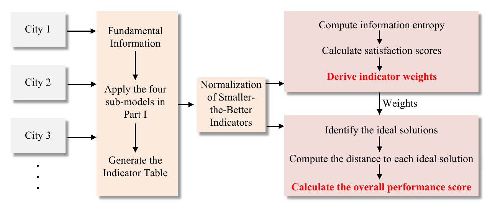

MODÉLISATION MATHÉMATIQUE ET DURABILITÉ
Mesurer l’empreinte des grands événements sportifs.
J’ai dirigé une équipe de deux au High School Mathematical Contest in Modeling pour évaluer l’empreinte environnementale des grands événements sportifs.

La question
Comment comparer la durabilité des villes hôtes lorsqu’un événement influe sur l’énergie, les émissions de gaz à effet de serre, la consommation d’eau et la production de déchets ?

Notre démarche
- Développement de sous-modèles hiérarchiques pour les indicateurs environnementaux.
- Application d’un cadre entropie–TOPSIS pour classer les villes hôtes selon leur durabilité.
- Validation du modèle avec les données du Super Bowl LIX et extension du cadre à des compétitions internationales à plusieurs étapes, notamment le BWF World Tour.
Mon rôle et les résultats
J’ai dirigé l’équipe de modélisation de deux personnes. Notre travail a abouti à un rapport de 25 pages et l’équipe a obtenu une mention honorable à HiMCM 2025.
Méthodes et outils
Indicateurs environnementaux · Pondération par entropie · TOPSIS